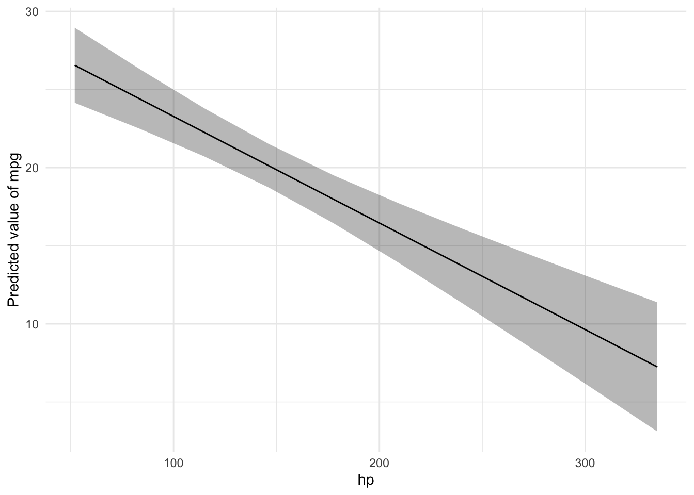
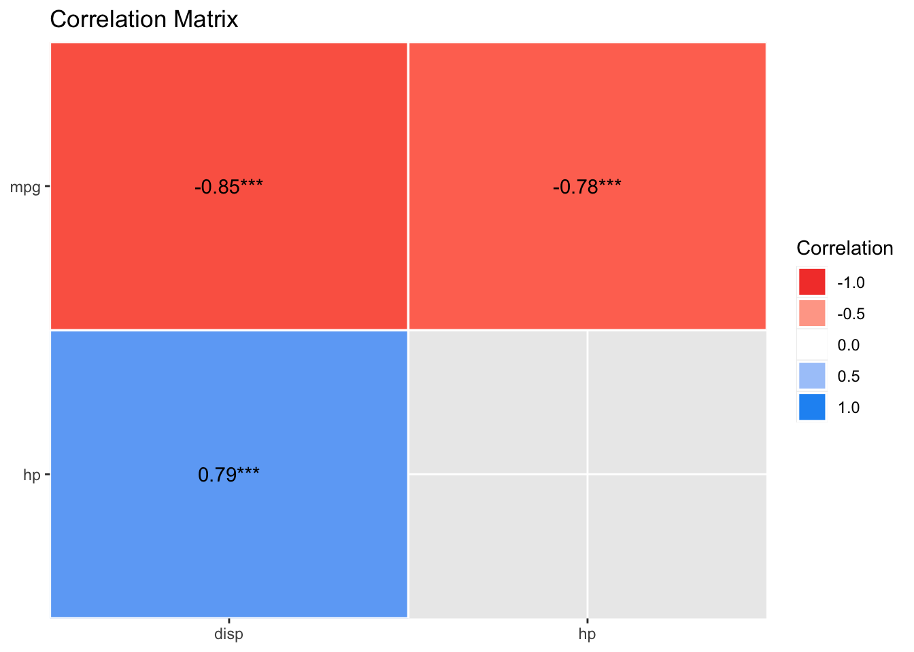

library(easystats)
library(tidyverse)
library(rstanarm) # optional!
library(ggpubr) # data visualization4 Modelling and regression
Keywords
statistics, modelling, introduction, course, data analysis, R

4.1 Setup
The following R packages are needed for this chapter.
4.2 What’s modelling?
Read this great introduction by modelling by Russel Poldrack. Actually, the whole book is nice Poldrack (2022).
An epitome of modelling is this, let’s call it the fundamental modelling equation, a bit grandiose but at the point, see Equation 4.1.
The data can be separated in the model’s prediction and the rest (the “error”), i.e., what’s unaccounted for by the model.
\[ \text{data} = \text{model} + \text{error} \tag{4.1}\]
A more visual account of our basic modelling equation is depicted in Figure 4.1.
flowchart LR X --> Y error --> Y
4.2.1 Regression as the umbrella tool for modelling

Alternatively, venture into the forest of statistical tests as outlined e.g. here, at Uni Muenster. Proceed at your own peril.
You may want to ponder on this image of a decision tree of which test to choose, see Figure Figure 4.2.

4.2.2 Common statistical tests are linear models
As Jonas Kristoffer Lindeløv tells us, we can formulate most statistical tests as a linear model, ie., a regression.

4.2.3 How to find the regression line
In the simplest case, regression analyses can be interpreted geometrically as a line in a 2D coordinate system, see Figure Figure 4.3.

Source: Orzetoo, CC-SA, Wikimedia
{kind=link}
Put simple, we are looking for the line which is in the “middle of the points”. More precisely, we place the line such that the squared distances from the line to the points is minimal, see Figre Figure 4.3.
Consider Figure Figure 4.4, from this source by Roback & Legler (2021). It visualizes not only the notorious regression line, but also sheds light on regression assumptions, particularly on the error distribution.

Among the assumptions of the linear model are:
- linearity of the function
- variance of \(y\) remains constant across range of \(x\)
- normality of residuals
4.2.4 The linear model
Here’s the canonical form of the linear model.
Consider a model with \(k\) predictors:
\[y = \beta_0 + \beta_1 x_1 + \ldots + \beta_k x_k + \epsilon\]
4.2.5 Algebraic derivation
For the mathematical inclined, check out this derivation of the simple case regression model. Note that the article is written in German, but your browser can effortlessly translate into English. Here’s a similar English article from StackExchange.
4.2.6 The linear model in all its glory

Let’s depict the residuals, s. Figure 4.5.

4.2.7 A ladder of common regression formula variants
The following “ladder” shows the logical structure of common linear model in increasing complexity.
Note:
y: the dependent variablex: a metric independent variableb: a binary (dichotomic) independent variableg: a nominal (two or more groups) independent variable_c: a centered variable
y ~ 1- the simple grand mean valuey ~ b- difference between two mean valuesy ~ g- differences between multiple mean valuesy ~ x_c- y as a linear function of xy ~ x1_c + x2_c- y as a linear function of both x1 and x2y ~ x_c + g + x_c:g- the interaction (moderator) modellog(y) ~ x1 + x2- multiplicative association of independent variableslog(p/(1-p)) ~ x- logistic regression
4.3 A simple model: one metric predictor
Note
All the R-code for each chapter can be found as pure, R-only files here. \(\square\)
First, let’s load some data:
data(mtcars)
glimpse(mtcars) # don't forget to start the "tidyverse package" upfrontRows: 32
Columns: 11
$ mpg <dbl> 21.0, 21.0, 22.8, 21.4, 18.7, 18.1, 14.3, 24.4, 22.8, 19.2, 17.8,…
$ cyl <dbl> 6, 6, 4, 6, 8, 6, 8, 4, 4, 6, 6, 8, 8, 8, 8, 8, 8, 4, 4, 4, 4, 8,…
$ disp <dbl> 160.0, 160.0, 108.0, 258.0, 360.0, 225.0, 360.0, 146.7, 140.8, 16…
$ hp <dbl> 110, 110, 93, 110, 175, 105, 245, 62, 95, 123, 123, 180, 180, 180…
$ drat <dbl> 3.90, 3.90, 3.85, 3.08, 3.15, 2.76, 3.21, 3.69, 3.92, 3.92, 3.92,…
$ wt <dbl> 2.620, 2.875, 2.320, 3.215, 3.440, 3.460, 3.570, 3.190, 3.150, 3.…
$ qsec <dbl> 16.46, 17.02, 18.61, 19.44, 17.02, 20.22, 15.84, 20.00, 22.90, 18…
$ vs <dbl> 0, 0, 1, 1, 0, 1, 0, 1, 1, 1, 1, 0, 0, 0, 0, 0, 0, 1, 1, 1, 1, 0,…
$ am <dbl> 1, 1, 1, 0, 0, 0, 0, 0, 0, 0, 0, 0, 0, 0, 0, 0, 0, 1, 1, 1, 0, 0,…
$ gear <dbl> 4, 4, 4, 3, 3, 3, 3, 4, 4, 4, 4, 3, 3, 3, 3, 3, 3, 4, 4, 4, 3, 3,…
$ carb <dbl> 4, 4, 1, 1, 2, 1, 4, 2, 2, 4, 4, 3, 3, 3, 4, 4, 4, 1, 2, 1, 1, 2,…4.3.1 Frequentist
Define and fit the model:
lm1_freq <- lm(mpg ~ hp, data = mtcars)Get the parameter values:
parameters(lm1_freq)| Parameter | Coefficient | SE | CI | CI_low | CI_high | t | df_error | p |
|---|---|---|---|---|---|---|---|---|
| (Intercept) | 30.0988605 | 1.6339210 | 0.95 | 26.7619488 | 33.4357723 | 18.421246 | 30 | 0e+00 |
| hp | -0.0682283 | 0.0101193 | 0.95 | -0.0888947 | -0.0475619 | -6.742388 | 30 | 2e-07 |
Plot the model parameters:
plot(parameters(lm1_freq))
Plot the regression line:
estimate_prediction(lm1_freq, by = "hp") |>
plot() +
geom_point(aes(y = mpg, x = hp), data = mtcars)
4.3.2 Bayesian
lm1_bayes <- stan_glm(mpg ~ hp, data = mtcars)
SAMPLING FOR MODEL 'continuous' NOW (CHAIN 1).
Chain 1:
Chain 1: Gradient evaluation took 0.000423 seconds
Chain 1: 1000 transitions using 10 leapfrog steps per transition would take 4.23 seconds.
Chain 1: Adjust your expectations accordingly!
Chain 1:
Chain 1:
Chain 1: Iteration: 1 / 2000 [ 0%] (Warmup)
Chain 1: Iteration: 200 / 2000 [ 10%] (Warmup)
Chain 1: Iteration: 400 / 2000 [ 20%] (Warmup)
Chain 1: Iteration: 600 / 2000 [ 30%] (Warmup)
Chain 1: Iteration: 800 / 2000 [ 40%] (Warmup)
Chain 1: Iteration: 1000 / 2000 [ 50%] (Warmup)
Chain 1: Iteration: 1001 / 2000 [ 50%] (Sampling)
Chain 1: Iteration: 1200 / 2000 [ 60%] (Sampling)
Chain 1: Iteration: 1400 / 2000 [ 70%] (Sampling)
Chain 1: Iteration: 1600 / 2000 [ 80%] (Sampling)
Chain 1: Iteration: 1800 / 2000 [ 90%] (Sampling)
Chain 1: Iteration: 2000 / 2000 [100%] (Sampling)
Chain 1:
Chain 1: Elapsed Time: 0.035 seconds (Warm-up)
Chain 1: 0.033 seconds (Sampling)
Chain 1: 0.068 seconds (Total)
Chain 1:
SAMPLING FOR MODEL 'continuous' NOW (CHAIN 2).
Chain 2:
Chain 2: Gradient evaluation took 1.4e-05 seconds
Chain 2: 1000 transitions using 10 leapfrog steps per transition would take 0.14 seconds.
Chain 2: Adjust your expectations accordingly!
Chain 2:
Chain 2:
Chain 2: Iteration: 1 / 2000 [ 0%] (Warmup)
Chain 2: Iteration: 200 / 2000 [ 10%] (Warmup)
Chain 2: Iteration: 400 / 2000 [ 20%] (Warmup)
Chain 2: Iteration: 600 / 2000 [ 30%] (Warmup)
Chain 2: Iteration: 800 / 2000 [ 40%] (Warmup)
Chain 2: Iteration: 1000 / 2000 [ 50%] (Warmup)
Chain 2: Iteration: 1001 / 2000 [ 50%] (Sampling)
Chain 2: Iteration: 1200 / 2000 [ 60%] (Sampling)
Chain 2: Iteration: 1400 / 2000 [ 70%] (Sampling)
Chain 2: Iteration: 1600 / 2000 [ 80%] (Sampling)
Chain 2: Iteration: 1800 / 2000 [ 90%] (Sampling)
Chain 2: Iteration: 2000 / 2000 [100%] (Sampling)
Chain 2:
Chain 2: Elapsed Time: 0.032 seconds (Warm-up)
Chain 2: 0.033 seconds (Sampling)
Chain 2: 0.065 seconds (Total)
Chain 2:
SAMPLING FOR MODEL 'continuous' NOW (CHAIN 3).
Chain 3:
Chain 3: Gradient evaluation took 1.6e-05 seconds
Chain 3: 1000 transitions using 10 leapfrog steps per transition would take 0.16 seconds.
Chain 3: Adjust your expectations accordingly!
Chain 3:
Chain 3:
Chain 3: Iteration: 1 / 2000 [ 0%] (Warmup)
Chain 3: Iteration: 200 / 2000 [ 10%] (Warmup)
Chain 3: Iteration: 400 / 2000 [ 20%] (Warmup)
Chain 3: Iteration: 600 / 2000 [ 30%] (Warmup)
Chain 3: Iteration: 800 / 2000 [ 40%] (Warmup)
Chain 3: Iteration: 1000 / 2000 [ 50%] (Warmup)
Chain 3: Iteration: 1001 / 2000 [ 50%] (Sampling)
Chain 3: Iteration: 1200 / 2000 [ 60%] (Sampling)
Chain 3: Iteration: 1400 / 2000 [ 70%] (Sampling)
Chain 3: Iteration: 1600 / 2000 [ 80%] (Sampling)
Chain 3: Iteration: 1800 / 2000 [ 90%] (Sampling)
Chain 3: Iteration: 2000 / 2000 [100%] (Sampling)
Chain 3:
Chain 3: Elapsed Time: 0.056 seconds (Warm-up)
Chain 3: 0.037 seconds (Sampling)
Chain 3: 0.093 seconds (Total)
Chain 3:
SAMPLING FOR MODEL 'continuous' NOW (CHAIN 4).
Chain 4:
Chain 4: Gradient evaluation took 1.3e-05 seconds
Chain 4: 1000 transitions using 10 leapfrog steps per transition would take 0.13 seconds.
Chain 4: Adjust your expectations accordingly!
Chain 4:
Chain 4:
Chain 4: Iteration: 1 / 2000 [ 0%] (Warmup)
Chain 4: Iteration: 200 / 2000 [ 10%] (Warmup)
Chain 4: Iteration: 400 / 2000 [ 20%] (Warmup)
Chain 4: Iteration: 600 / 2000 [ 30%] (Warmup)
Chain 4: Iteration: 800 / 2000 [ 40%] (Warmup)
Chain 4: Iteration: 1000 / 2000 [ 50%] (Warmup)
Chain 4: Iteration: 1001 / 2000 [ 50%] (Sampling)
Chain 4: Iteration: 1200 / 2000 [ 60%] (Sampling)
Chain 4: Iteration: 1400 / 2000 [ 70%] (Sampling)
Chain 4: Iteration: 1600 / 2000 [ 80%] (Sampling)
Chain 4: Iteration: 1800 / 2000 [ 90%] (Sampling)
Chain 4: Iteration: 2000 / 2000 [100%] (Sampling)
Chain 4:
Chain 4: Elapsed Time: 0.034 seconds (Warm-up)
Chain 4: 0.037 seconds (Sampling)
Chain 4: 0.071 seconds (Total)
Chain 4: Actually, we want to suppress some overly verbose output of the sampling, so add the argument refresh = 0:
lm1_bayes <- stan_glm(mpg ~ hp, data = mtcars, refresh = 0)4.3.3 Model parameters
Get the parameter values:
parameters(lm1_bayes)| Parameter | Median | CI | CI_low | CI_high | pd | Rhat | ESS | Prior_Distribution | Prior_Location | Prior_Scale |
|---|---|---|---|---|---|---|---|---|---|---|
| (Intercept) | 30.1271159 | 0.95 | 26.760846 | 33.3711909 | 1 | 1.000212 | 3514.811 | normal | 20.09062 | 15.0673701 |
| hp | -0.0680751 | 0.95 | -0.088685 | -0.0472875 | 1 | 1.000639 | 3617.460 | normal | 0.00000 | 0.2197599 |
parameters(lm1_freq)| Parameter | Coefficient | SE | CI | CI_low | CI_high | t | df_error | p |
|---|---|---|---|---|---|---|---|---|
| (Intercept) | 30.0988605 | 1.6339210 | 0.95 | 26.7619488 | 33.4357723 | 18.421246 | 30 | 0e+00 |
| hp | -0.0682283 | 0.0101193 | 0.95 | -0.0888947 | -0.0475619 | -6.742388 | 30 | 2e-07 |
Plot the model parameters:
plot(parameters(lm1_bayes))
Get some predictions
lm1_pred <- estimate_relation(lm1_freq)
lm1_pred| hp | Predicted | SE | CI_low | CI_high |
|---|---|---|---|---|
| 52.000 | 26.550990 | 1.1766139 | 24.148024 | 28.95396 |
| 83.444 | 24.405620 | 0.9358964 | 22.494265 | 26.31698 |
| 114.889 | 22.260182 | 0.7548966 | 20.718477 | 23.80189 |
| 146.333 | 20.114812 | 0.6828911 | 18.720162 | 21.50946 |
| 177.778 | 17.969374 | 0.7518707 | 16.433849 | 19.50490 |
| 209.222 | 15.824004 | 0.9310050 | 13.922638 | 17.72537 |
| 240.667 | 13.678565 | 1.1707869 | 11.287500 | 16.06963 |
| 272.111 | 11.533196 | 1.4412468 | 8.589777 | 14.47661 |
| 303.556 | 9.387757 | 1.7280527 | 5.858603 | 12.91691 |
| 335.000 | 7.242387 | 2.0242544 | 3.108308 | 11.37647 |
More details on the above function can be found on the respective page at the easystats site.
Plot the model (regression line):
plot(lm1_pred) +
geom_point(aes(y = mpg, x = hp), data = mtcars)
4.3.4 Model performance
r2(lm1_freq)# R2 for Linear Regression
R2: 0.602
adj. R2: 0.589r2(lm1_bayes)# Bayesian R2 with Compatibility Interval
Conditional R2: 0.588 (95% CI [0.373, 0.753])4.3.5 Model check
Here’s a bunch of typical model checks in the Frequentist sense.
check_model(lm1_freq)And here are some Bayesian flavored model checks.
check_model(lm1_bayes)
Let’s have a look at the predictions and the residuals:
mtcars <-
mtcars |>
mutate(pred = predict(lm1_bayes),
resid = resid(lm1_bayes))gghistogram(mtcars,
x = "resid")
Looks okay.
4.3.6 More of this
More technical details for gauging model performance and model quality, can be found on the site of the R package “performance at the easystats site.
4.3.7 Exercises
See Datenwerk with tag “#regression”.
4.3.8 Lab
Run a simple regression on your own research data. Present the results. Did you encounter any glitches?
4.4 Bayes-members only
Bayes statistics provide a distribution as the result of the analysis, the posterior distribution, which provides us with quite some luxury.
As the posterior distribution manifests itself by a number of samples, we can easily filter and manipulate this sample distribution in order to ask some interesing questions.
See
lm1_bayes_tibble <- as_tibble(lm1_bayes) # cast as a tibble (table)
head(lm1_bayes_tibble) # show the first few rows| (Intercept) | hp | sigma |
|---|---|---|
| 28.84148 | -0.0716195 | 4.224321 |
| 32.40379 | -0.0773078 | 3.943005 |
| 28.26745 | -0.0616808 | 3.838316 |
| 33.07188 | -0.0830290 | 4.403910 |
| 30.84380 | -0.0711837 | 3.861623 |
| 29.37730 | -0.0574441 | 3.998523 |
4.4.1 Asking for probabilites
What’s the probability that the effect of hp is negative?
lm1_bayes_tibble %>%
count(hp < 0)| hp < 0 | n |
|---|---|
| TRUE | 4000 |
Feel free to ask similar questions!
4.4.2 Asking for quantiles
With a given probability of, say 90%, how large is the effect of hp?
quantile(lm1_bayes_tibble$hp, .9) 90%
-0.05458488 What’s the smallest 95% percent interval for the effect of hp?
hdi(lm1_bayes)| Parameter | CI | CI_low | CI_high | Effects | Component |
|---|---|---|---|---|---|
| (Intercept) | 0.95 | 26.8240164 | 33.4168051 | fixed | conditional |
| hp | 0.95 | -0.0887201 | -0.0473449 | fixed | conditional |
In case you prefer 89% intervals (I do!):
hdi(lm1_bayes, ci = .89)| Parameter | CI | CI_low | CI_high | Effects | Component |
|---|---|---|---|---|---|
| (Intercept) | 0.89 | 27.5246307 | 32.8680028 | fixed | conditional |
| hp | 0.89 | -0.0849041 | -0.0512066 | fixed | conditional |
4.4.3 Model specification
In Bayes statistics, it is customary to specify the model in something like the following way:
\[\begin{aligned} y_i &\sim N(\mu_i,\sigma)\\ \mu_i &= \beta_0 + \beta_1 x_i\\ \beta_0, \beta_1 &\sim N(0, 1) \\ \sigma &\sim E(1) \end{aligned}\]
In this specification, \(N\) refers to the normal distribution, and \(E\) to the exponential distribution. Furthermore, this model assumes that the \(X\) and \(Y\) are given in standard units.
4.4.4 Prediction interval
A prediction interval answers the following question
How large is the uncertainty in \(y\) associated with a given obersation? What interval of values should I expect for a randomly chosen observation?
For example, what’s the uncertainty attached to the fuel economy of a car with 100 hp?
estimate_prediction(model = lm1_bayes,
data = tibble(hp = 100) )| hp | Predicted | SE | CI_low | CI_high |
|---|---|---|---|---|
| 100 | 23.26693 | 4.167489 | 14.99959 | 31.42942 |
4.4.5 … And more
We could even ask intriguing questions such as
Given the model, and given two random observations, one from the experimental group and one from the control group, what is the probability that observation 1 has a higher value in \(Y\) than observation 2 has?
Note that we are not only asking for “typical” observations as predicted by the model but we are also taking into account the uncertainty of the prediction for each group. Hence, this kind of questions is likely to yield more realistic (and less clear-cut) answers than just asking for the typical value. In other words, such analyses draw on the posterior predictive distribution.
4.5 More linear models
4.5.1 Multiple metric predictors
Assume we have a theory that dictates that fuel economy is a (causal) function of horse power and engine displacement.
lm2_freq <- lm(mpg ~ hp + disp, data = mtcars)
parameters(lm2_freq)| Parameter | Coefficient | SE | CI | CI_low | CI_high | t | df_error | p |
|---|---|---|---|---|---|---|---|---|
| (Intercept) | 30.7359042 | 1.3315661 | 0.95 | 28.0125457 | 33.4592628 | 23.082522 | 29 | 0.0000000 |
| hp | -0.0248401 | 0.0133855 | 0.95 | -0.0522165 | 0.0025363 | -1.855746 | 29 | 0.0736791 |
| disp | -0.0303463 | 0.0074049 | 0.95 | -0.0454909 | -0.0152016 | -4.098159 | 29 | 0.0003063 |
Similarly for Bayes inference:
lm2_bayes <- stan_glm(mpg ~ hp + disp, data = mtcars)Results
parameters(lm2_bayes)| Parameter | Median | CI | CI_low | CI_high | pd | Rhat | ESS | Prior_Distribution | Prior_Location | Prior_Scale |
|---|---|---|---|---|---|---|---|---|---|---|
| (Intercept) | 30.7414461 | 0.95 | 27.9174011 | 33.5256115 | 1.00 | 0.9995722 | 5030.497 | normal | 20.09062 | 15.0673701 |
| hp | -0.0249491 | 0.95 | -0.0521502 | 0.0023749 | 0.96 | 1.0025928 | 1941.692 | normal | 0.00000 | 0.2197599 |
| disp | -0.0300386 | 0.95 | -0.0459895 | -0.0154262 | 1.00 | 1.0017993 | 1962.035 | normal | 0.00000 | 0.1215712 |
plot(parameters(lm2_bayes))
r2(lm2_bayes)# Bayesian R2 with Compatibility Interval
Conditional R2: 0.730 (95% CI [0.566, 0.840])Depending on the value of disp the prediction of mpg from hp will vary:
lm2_pred <- estimate_relation(lm2_freq)
plot(lm2_pred)4.5.2 One nominal predictor
lm3a <- lm(mpg ~ am, data = mtcars)
parameters(lm3a)| Parameter | Coefficient | SE | CI | CI_low | CI_high | t | df_error | p |
|---|---|---|---|---|---|---|---|---|
| (Intercept) | 17.147368 | 1.124602 | 0.95 | 14.85062 | 19.44411 | 15.247492 | 30 | 0.000000 |
| am | 7.244939 | 1.764422 | 0.95 | 3.64151 | 10.84837 | 4.106127 | 30 | 0.000285 |
A linear model with one predictor having two values amounts to nothing more than comparing the means of two groups:
ggdotplot(mtcars, x = "am", y = "mpg",
add = c("mean_se")) +
labs(caption = "Mean plus/minus SE are shown")
Let’s compute the mean values per group:
mtcars |>
group_by(am) |>
describe_distribution(select = "mpg")| am | Variable | Mean | SD | IQR | Min | Max | Skewness | Kurtosis | n | n_Missing |
|---|---|---|---|---|---|---|---|---|---|---|
| 0 | mpg | 17.14737 | 3.833966 | 4.50 | 10.4 | 24.4 | 0.0164578 | -0.3339353 | 19 | 0 |
| 1 | mpg | 24.39231 | 6.166504 | 10.05 | 15.0 | 33.9 | 0.0672942 | -1.1586082 | 13 | 0 |
However, unfortunately, the plot of the model needs a nominal variable if we are to compare groups. In our case, am is considered a numeric variables, since it consists of numbers only. The plot does not work as expected, malheureusement:
plot(estimate_relation(lm3a))
plot(lm3a_means)Error: Objekt 'lm3a_means' nicht gefundenWe need to transform am to a factor variable. That’s something like a string (text) variable. If we hand over a factor() to the plotting function, everything will run smoothly. Computationwise, no big differences:
mtcars2 <-
mtcars %>%
mutate(am_f = factor(am))
lm3a <- lm(mpg ~ am_f, data = mtcars2)
parameters(lm3a)| Parameter | Coefficient | SE | CI | CI_low | CI_high | t | df_error | p |
|---|---|---|---|---|---|---|---|---|
| (Intercept) | 17.147368 | 1.124602 | 0.95 | 14.85062 | 19.44411 | 15.247492 | 30 | 0.000000 |
| am_f1 | 7.244939 | 1.764422 | 0.95 | 3.64151 | 10.84837 | 4.106127 | 30 | 0.000285 |
We can also compute the predicted output values of our model at given input variable values:
lm3a_means <- estimate_means(lm3a, at = "am = c(0, 1)")
lm3a_means | am_f | Mean | SE | CI_low | CI_high | t | df |
|---|---|---|---|---|---|---|
| 0 | 17.14737 | 1.124602 | 14.85062 | 19.44411 | 15.24749 | 30 |
| 1 | 24.39231 | 1.359578 | 21.61568 | 27.16894 | 17.94108 | 30 |
If we were not to specify the values of am which we would like to get predictions for, the default of the function would select 10 values, spread across the range of am. For numeric variables, this is usually fine. However, for nominal variables - and am is in fact a nominally scaled variable - we insist that we want predictions for the levels of the variable only, that is for 0 and 1.
lm3a_means <- estimate_means(lm3a)
plot(lm3a_means)
Note that we should have converted am to a factor variable before fitting the model. Otherwise, the plot won’t work.
Here’s a more hand-crafted version of the last plot, see Fig. Figure 4.6.
ggplot(mtcars2) +
aes(x = am_f, y = mpg) +
geom_violin() +
geom_jitter(width = .1, alpha = .5) +
geom_pointrange(data = lm3a_means,
color = "orange",
aes(ymin = CI_low, ymax = CI_high, y = Mean)) +
geom_line(data = lm3a_means, aes(y = Mean, group = 1))4.5.3 One metric and one nominal predictor
mtcars2 <-
mtcars %>%
mutate(cyl = factor(cyl))
lm4 <- lm(mpg ~ hp + cyl, data = mtcars2)
parameters(lm4)| Parameter | Coefficient | SE | CI | CI_low | CI_high | t | df_error | p |
|---|---|---|---|---|---|---|---|---|
| (Intercept) | 28.6501182 | 1.5877870 | 0.95 | 25.3976840 | 31.9025524 | 18.044056 | 28 | 0.0000000 |
| hp | -0.0240388 | 0.0154079 | 0.95 | -0.0556005 | 0.0075228 | -1.560163 | 28 | 0.1299540 |
| cyl6 | -5.9676551 | 1.6392776 | 0.95 | -9.3255631 | -2.6097471 | -3.640418 | 28 | 0.0010921 |
| cyl8 | -8.5208508 | 2.3260749 | 0.95 | -13.2855993 | -3.7561022 | -3.663188 | 28 | 0.0010286 |
lm4_pred <- estimate_relation(lm4)
plot(lm4_pred)
4.5.4 Watch out for Simpson
Beware! Model estimates can swing wildly if you add (or remove) some predictor from your model. See this post for an demonstration.
4.5.5 Quadrat models are also linear
Let’s simulate some data, where \(X\) and \(Y\) are associated in a quadratic manner:
x <- abs(rnorm(n = 100, sd = 3))
e <- rnorm(100)
y <- x^2 + e
d_square <-
data.frame(
x = x,
e = e,
y = y
)Here’s a scatterplot of the data:
ggscatter(d_square,
x = "x",
y = "y")
Here’s a “quadratic linear” model:
lm_square <-
lm(y ~ I(x^2) + x, data = d_square)Note x^2 in a regression formula is not understood as arithmetic squaring. Hence, we need the I().
parameters(lm_square)| Parameter | Coefficient | SE | CI | CI_low | CI_high | t | df_error | p |
|---|---|---|---|---|---|---|---|---|
| (Intercept) | -0.3513295 | 0.2865703 | 0.95 | -0.9200923 | 0.2174334 | -1.2259798 | 97 | 0.2231743 |
| I(x^2) | 0.9870886 | 0.0375881 | 0.95 | 0.9124867 | 1.0616905 | 26.2606916 | 97 | 0.0000000 |
| x | 0.1465346 | 0.2331559 | 0.95 | -0.3162154 | 0.6092845 | 0.6284831 | 97 | 0.5311646 |
Here’s our quadratic trend:
estimate_relation(lm_square) |>
plot() +
geom_point(aes(x = x, y = y), data = d_square)
Why is this quadratic model considered linear?
Because \(y\) is a linear function of the betas; the x-es are seen as constants:
\(y = \beta_0 + \beta_1\times x_1 + \beta_2 \times x_2 + \epsilon\),
where \(\x_2\) is the squared value of x.
The same logic applies for other “non-linear” trends such as higher polynomials or exponential trends.
4.6 What about correlation?
Correlation is really a close cousin to regression. In fact, regression with standardized variables amounts to correlation.
Let’s get the correlation matrix of the variables in involved in lm4.
lm4_corr <-
mtcars %>%
select(mpg, hp, disp) %>%
correlation()
lm4_corr| Parameter1 | Parameter2 | r | CI | CI_low | CI_high | t | df_error | p | Method | n_Obs |
|---|---|---|---|---|---|---|---|---|---|---|
| mpg | hp | -0.7761684 | 0.95 | -0.8852686 | -0.5860994 | -6.742388 | 30 | 2e-07 | Pearson correlation | 32 |
| mpg | disp | -0.8475514 | 0.95 | -0.9233594 | -0.7081376 | -8.747151 | 30 | 0e+00 | Pearson correlation | 32 |
| hp | disp | 0.7909486 | 0.95 | 0.6106794 | 0.8932775 | 7.080122 | 30 | 1e-07 | Pearson correlation | 32 |
plot(summary(lm4_corr))
Again, here’s the scatter plot (for mpg as a function of disp):
ggscatter(mtcars,
x = "disp",
y = "mpg",
add = "reg.line")
4.7 Exercises
🧑🎓 I want more!
👨🏫 Checkout all exercises tagged with “regression” on datenwerk. Pro-Tipp: Use the translation function of your browers to translate the webpage into your favorite language.
4.8 Case study
- Prices of Boston houses, first part
- Modeling movie succes, first part
4.9 Lab
Get your own data, and build a simple model reflecting your research hypothesis. If you are lacking data (or hypothesis) get something close to it.
4.10 Going further
Check-out this chapter of my intro stats book to get an overview on statistical modeling using basic regression technieques. Please use your browser’s translation feature to render the webpages into your favorite language.
An accessible treatment of regression is provided by Ismay & Kim (2020).
Roback & Legler (2021) provide a more than introductory account of regression while being accessible. A recent but already classic book (if this is possible) is the book by Gelman et al. (2021). You may also benefit from Poldrack (2022) (open access).
For a gentle introduction to the basics of modelling, see ModernDive Chap. 5.0 (Ismay & Kim, 2020), and get the R code here. For slightly more advanced topics on linear regression such as multiple regression and interaction, see ModernDive Chap. 6, and get the R code here.
{kind=link}